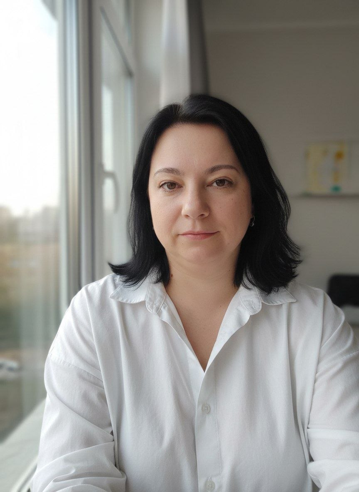

Отвечает ночью и в выходные
Цены по категориям, рассрочка, расписание групп, сколько занятий и где площадка.
Вопрос «а сколько стоит B» приходит в субботу в 22:40. Бот отвечает за секунду, а не в понедельник.
Бот для автошколы в Телеграме, ВКонтакте или MAX. Новый человек пишет в 23:10: сколько стоит категория B и можно ли в рассрочку. Бот отвечает сразу, берёт имя и телефон и кладёт заявку в вашу программу. Утром администратору остаётся перезвонить.
7 вопросов, около минуты. Цена видна сразу, звонить не нужно.
Главная работа – люди, которые ещё не стали курсантами: пишут вечером, в выходные, в праздники. Бот отвечает им сразу, пока они не ушли к соседней автошколе.
Цены по категориям, рассрочка, расписание групп, сколько занятий и где площадка.
Вопрос «а сколько стоит B» приходит в субботу в 22:40. Бот отвечает за секунду, а не в понедельник.
Спрашивает имя, телефон, категорию и филиал. Заявка сразу появляется в «Автошкола-Контроль», amoCRM или Google Таблице и приходит администратору в Телеграм.
Написали ночью – в 9:00 заявка уже в базе, переписывать ничего не нужно.
Человек сам выбирает время пробного занятия или консультации в офисе.
Выбрал субботу, 11:00 – администратор видит запись и встречает его.
Мини-тренажёр из нескольких вопросов ПДД. Тому, кто только собирается учиться, это интересно, а в конце бот предлагает записаться.
Ответил на 2 вопроса из 3 – бот предлагает группу, которая стартует 18 ноября.
Курсант сам берёт окно у инструктора, бот напоминает за день и за 2 часа. Нужно, если запись сейчас ведётся по телефону или в тетради.
У кого уже есть «Автошкола-Контроль», тем не дублируем – запись там уже есть.
Раз в неделю: сколько пришло заявок, из какого канала, сколько пришло ночью и в выходные.
В понедельник утром одно сообщение с цифрами вместо расспросов администратора.
7 вопросов о том, что вы и так знаете. Отвечайте примерно, как помните. Калькулятор считает только по вашим ответам и сразу показывает цену.
Бот отвечает на такие вопросы сразу и в любое время. Сколько часов освободится у вас – посчитаем на пробе по живым цифрам, без обещаний заранее.
Первые пять автошкол получают низкую цену – взамен я прошу разрешения рассказать о результате. Потом цена поднимается.
| Что входит | Сейчас | После пяти кейсов |
|---|---|---|
| Проба: ответы на частые вопросы и заявки администратору, один мессенджер3–5 рабочих дней | 15 000 ₽ | 30 000 ₽ |
| Ещё один канал – ВКонтакте, MAX или окно на сайте | +1 500 ₽ | +3 000 ₽ |
| Заявки сразу в «Автошкола-Контроль», amoCRM или другую вашу программу | +4 000 ₽ | +8 000 ₽ |
| Запись на вождение по свободным окнам инструкторов – если своей программы нет | +4 000 ₽ | +8 000 ₽ |
| Мини-тренажёр ПДД для будущих курсантов с записью на консультацию | +1 500 ₽ | +3 000 ₽ |
| Напоминания о вождении и оплате, кнопка «перенести» | +1 500 ₽ | +3 000 ₽ |
| Остаток часов и оплат в боте | +1 500 ₽ | +3 000 ₽ |
| Поддержка: новые цены, расписание, правки ответов, присмотр за ботом | 3 000 ₽/мес | от 5 000 ₽/мес |
Полный набор обычно выходит около 25 000 ₽ и делается за 2–3 недели. Оплату частями по СБП и недельный отчёт владельцу обсуждаем отдельно.
Сначала один процесс. Если не подойдёт – дальше не идём.
Вы отправляете ответы, я пишу в переписке, что сделаю и сколько это стоит.
Работаю по договору. Бот, таблицы и оплата оформляются на вашу автошколу.
За 3–5 рабочих дней бот начинает отвечать в одном мессенджере. Вы смотрите на живые заявки.
Если проба понравилась, подключаем запись, напоминания и другие каналы.
Доступы у васБот и таблицы оформлены на ваш аккаунт. Если перестанем работать, всё останется у вас.
Деньги идут вамОплата курсантов идёт на счёт автошколы, через меня деньги не проходят.
Без звонковВсё обсуждаем в переписке – удобно, когда администратор занят курсантами.

Меня зовут Винера Николаева, я делаю ботов и автоматизацию для бизнеса. Работаю по договору как ИП, и вы общаетесь напрямую со мной – с тем, кто собирает вашего бота.
Мой рабочий полигон – ИИ-бот в Телеграме, ВКонтакте и MAX с оплатой по СБП через ЮKassa. Он отвечает людям, выставляет счёт, открывает доступ после оплаты и сообщает владельцу о каждой оплате. Проверен живой оплатой.
Нет, звонки бот не принимает. Он берёт тех, кто пишет. Звонящим можно предложить ссылку на бота в карточке на Яндекс Картах и на сайте.
Бот его не заменяет, а дополняет. Сервис работает с теми, кто уже учится, а бот – с новыми людьми, которые пишут вечером и в выходные. Заявка из бота сразу появляется у вас в базе клиентов с пометкой, что пришла из бота. Ключ доступа создаёте вы сами в своём кабинете и можете отключить его в любой момент.
Проверю, можно ли подключиться к вашей программе. Если нельзя, заявки и запись будут в Google Таблице, которую видят администратор и инструкторы.
WhatsApp обсуждаем отдельно. Телеграм, ВКонтакте, MAX и окно на сайте – можно сразу.
Бот отвечает только тем, что вы дали: цены, расписание, условия. Если вопроса нет в списке, он передаёт его администратору и сообщает курсанту, что ему ответят.
Прайс, расписание групп, список инструкторов и частые вопросы. Обычно это один документ или фото со стенда. Остальное сделаю сама.
Минута на вопросы – и вы видите, сколько заявок приходит, когда никто не отвечает, и сколько будет стоить бот. Ответы приходят мне, отвечаю в переписке.